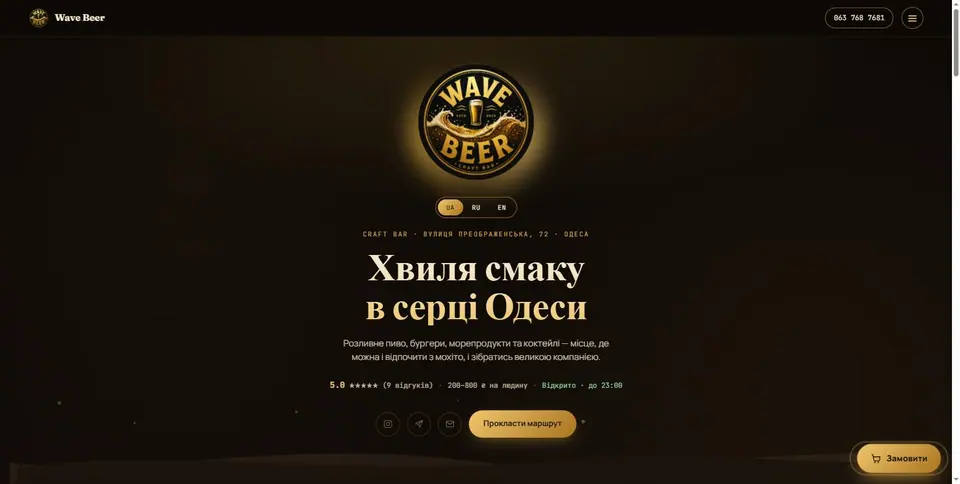
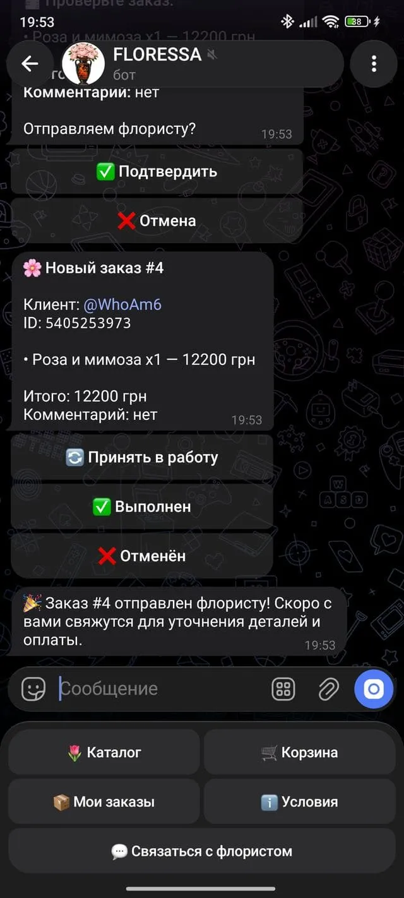

Telegram-боты
Каталоги товаров с фото и ценами, корзина и оформление заказа, админ-панель для управления ассортиментом, уведомления о новых заказах и интеграции с оплатой — под ваш формат бизнеса.
IT · Telegram-боты · Сайты
Делаю Telegram-ботов и сайты, которые не просто существуют — а продают, принимают заказы и работают на ваш бизнес каждый день.


shipping digital01 — Обо мне
Работаю один и веду проект от идеи до запуска: обсуждаем задачу, продумываю логику и структуру, пишу код, тестирую и передаю готовый результат — бота или сайт, который уже можно показывать клиентам.
const fomin = {
focus: "useful beauty",
process: ["think", "build", "ship"],
status: "available"
};
export default fomin;03 — Портфолио
02 — Услуги
Каталоги товаров с фото и ценами, корзина и оформление заказа, админ-панель для управления ассортиментом, уведомления о новых заказах и интеграции с оплатой — под ваш формат бизнеса.
Одностраничные сайты с продуманной структурой, плавными анимациями и переходами. От первого экрана до формы связи — каждый блок работает на понятную цель.
Подключаю приём оплаты (Stripe, PayPal, WayForPay) к уже существующему сайту или Telegram-боту и настраиваю автоматическую передачу заказов в CRM или чат — без ручной обработки каждого заказа.
Автоматизация рутинных задач, парсеры, конвертеры, генераторы, интеграции с API и небольшие консольные инструменты — под конкретную задачу и ваш сценарий работы.
Цены
Если после запуска понадобится вносить правки, обновлять контент или дорабатывать функциональность — беру проект на ежемесячное сопровождение.
OPEN SOURCE / 001
Консольный создатель временных email-адресов: до 1000 адресов через GuerrillaMail и Tempmail, параллельные запросы и готовый экспорт в TXT.
$ python3 create_emails.py \ --provider both --count 1000 \ --workers 16 --output emails.txt ✓ 1000 addresses ready → saved to ./emails.txt
Для тестов, разработки и легитимных приватных сценариев. Не используй для спама, обхода лимитов или массовых регистраций.
04 — Контакты
Расскажите, что нужно — бот, сайт или и то, и другое. Отвечаю быстро и обсуждаю задачу без лишних формальностей.
Начать обсуждение в Telegram ↗